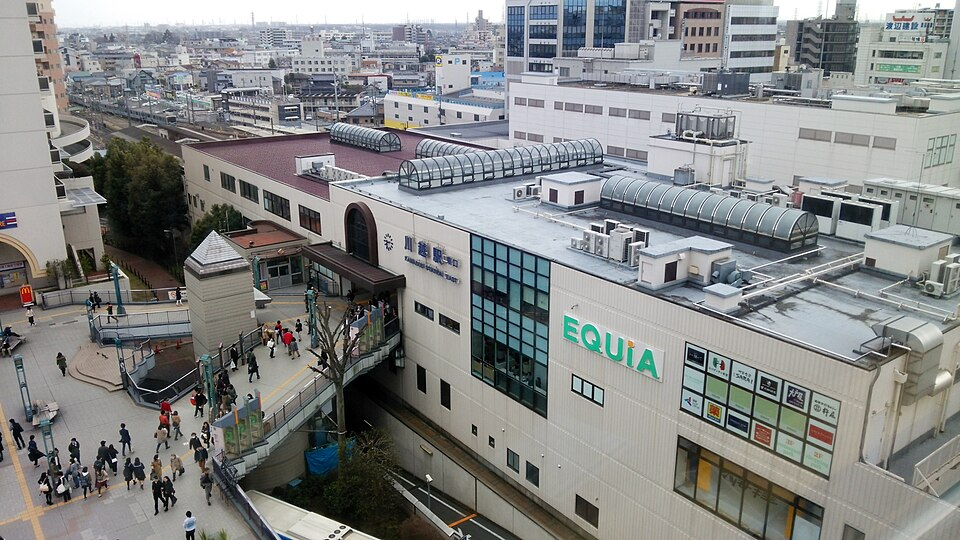

STATION GUIDE / 川越市
川越駅の街・住まいガイド
行き先に合わせて、
二つの路線を使う。
川越駅は東武東上線とJR川越線を利用できる駅です。同じ川越市内には、東上線の川越市駅、西武新宿線の本川越駅もあります。三つの駅をひとまとめにせず、実際の行き先に合わせて住む場所を選ぶことが大切です。

© DAJF / Wikimedia Commons / CC BY-SA 4.0。縮小版を使用。現在の風景とは異なる場合があります。
01 / ACCESS
交通から、暮らしを考える。
東上線を使う日とJRを使う日を分け、出発するホームまでの移動も含めて検討しましょう。路線によって目的地や乗り換えが変わるため、最短の一例だけでなく、普段の出発時刻で時刻表を調べると現実的です。
02 / DAILY LIFE
駅の外に、目を向ける。
東武の駅所在地は脇田町、JRの駅案内では脇田本町が示されています。東西どちらへ向かう住まいなのかを意識し、帰宅途中に立ち寄る店やバス乗り場までの道も確認したいポイントです。
03 / COMPARE
ほかの候補と比べるなら。
川越市駅・本川越駅とは別の駅です。二駅利用できるという物件表現を見る場合も、各駅の改札まで実際に歩き、雨の日や夜間も使いやすいかを比較しましょう。
VIEWING CHECKLIST
内見前の3つの確認
- JRと東上線の使い分けを書き出す
- 使う改札から物件までの道を歩く
- 川越市・本川越との駅の違いを確認する
個別物件の災害リスク・学校区・建築条件は、住所ごとに自治体や関係機関の最新情報で確認してください。
情報の出典とご利用について
鉄道会社の公式駅案内：川越駅 ↗JR東日本・川越駅 ↗情報確認日：2026年8月31日。駅名・路線・所在地等は公式情報を参照しています。暮らし方・比較・内見のポイントは心誠不動産の編集による提案です。現地調査報告や価格査定ではありません。運行状況・施設情報は公式サイトで最新情報をご確認ください。
EXPLORE MORE
次に読んでみたい駅
NEXT STEP
川越駅周辺で、どんな暮らしを？
気になる駅と、予算・広さ・通勤先を教えてください。
売却から住み替えまで、一緒に条件を整理します。
掲載内容は地域選びのガイドです。販売中の物件一覧ではありません。